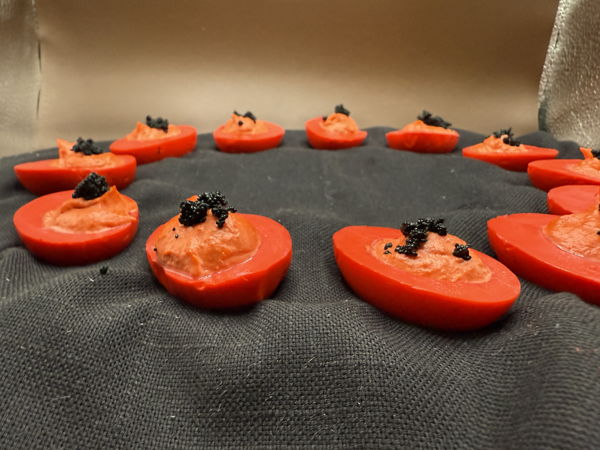

The Devil's Eggs: Pickled Beet Deviled Eggs with Paprika and Roe

Description
If the devil laid eggs, they'd probably look like these.
Makes 24 halves.
Ingredients
- 1 16 oz jar of pickled beets
- 2 cups water
- 1 cup vinegar
- 1 tbsp sugar
- 1 tsp whole black peppercorns, lightly crushed
- 1 tsp whole pink peppercorns, lightly crushed
- 1 tbsp kosher salt
- red food dye
- 12 eggs
- 1/3 cup finely chopped pickled beet
- 2 teaspoon Dijon mustard
- 6 tbsp full fat mayonnaise
- 1/4 teaspoon fine salt
- 1/4 teaspoon paprika
- 1/4 teaspoon cayenne
- black roe, for garnish
Steps
- Put eggs in a large pot. Cover with water by two inches. Place on high heat, and bring to a boil.
Once boiling, turn heat to low and let sit for 1 minute. Then remove from heat and cover for
11 minutes.
- Drain eggs and place them in an ice bath immediately. Once cooled, peel under cool running water,
rolling the eggs on the counter first to help break their shells. Cut the eggs in halve and pop
out the yolks, using a small spoon if needed. Set the yolks aside in a small bowl.
- Strain out the beets from the pickling liquid and add 3-5 drops of red food dye. Place the egg
halves in a jar, and pour the pickling beet juice over them. Let sit for 10-20 minutes.
- Add yolks to a blender or food processor (a blender will get them the creamiest) and add
remaining ingredients, plus another 3 drops of red food dye. Blend on high until
creamy and smooth.
- Once the egg halves have been dyed red, remove from the marinade and drain.
Scrape filling into a pastry bag and squeeze the mixture into the empty egg halves. Garnish with roe.
Home